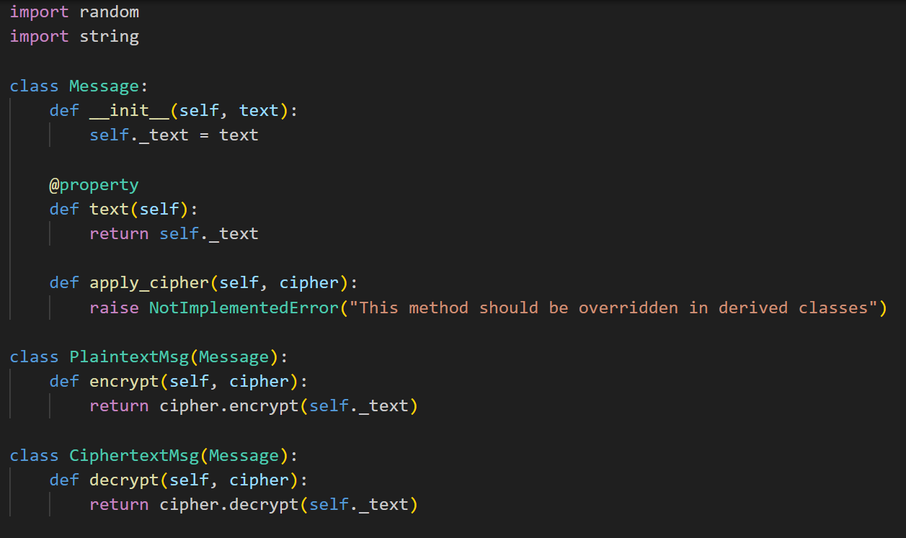
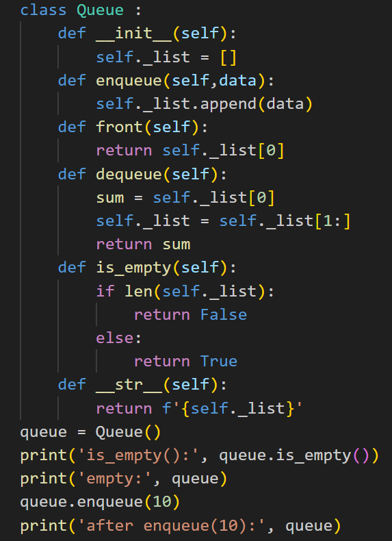
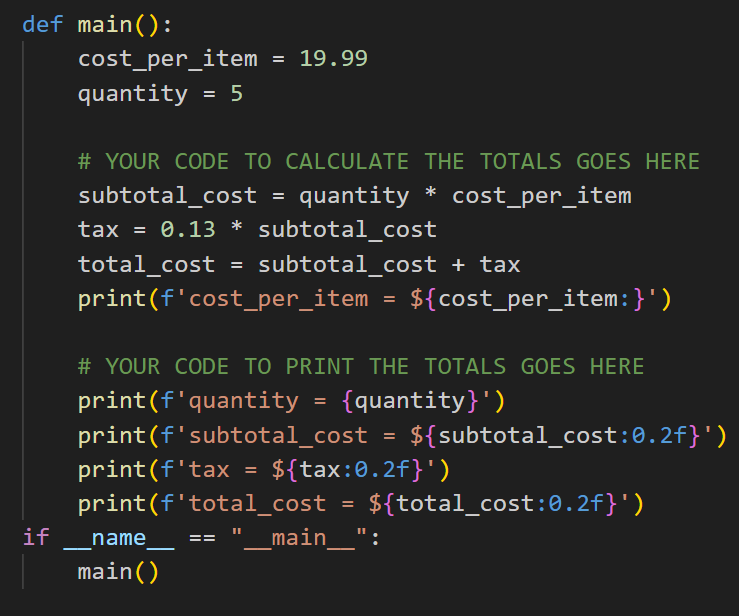

Hi, I'm Tala Bashanfar, a Tech Strategist, IT Project Manager, and Innovation Enthusiast. Currently pursuing my degree in Technology Management at Ontario Tech University, I focus on leveraging technology to drive business growth and streamline operations. My passion lies in managing IT projects and leading digital transformations that foster innovation and efficiency. I thrive on finding creative solutions to complex challenges, always staying ahead of emerging tech trends. Explore my portfolio to see how I merge strategic thinking with a love for technology. Welcome to my portfolio!
Short VideoThis project is a cipher-based encryption game that allows users to encrypt messages using a variety of encryption algorithms, including Caesar, Substitution, Playfair, Transposition, Product, and RSA ciphers. I developed a graphical user interface (GUI) using Tkinter to enable users to interact with the game by selecting ciphers from a dropdown menu and entering messages to be encrypted. The program efficiently handles different encryption methods and displays both the original and encrypted messages in real-time, leveraging object-oriented programming principles to ensure modularity and ease of extension. View Project 1 on GitHub
 2. Implementation of a Queue Class in PythonIn this project, I created a Queue class that implements fundamental queue operations such as enqueue, dequeue, and checking if the queue is empty. I used a list to manage the data, enabling elements to be added to the back and removed from the front, following the First-In-First-Out (FIFO) principle. My implementation includes methods for retrieving the front element, checking if the queue is empty, and providing a string representation of the queue's current state. I also included test cases that demonstrate the functionality of the queue by enqueuing and dequeuing various integers while displaying the queue's state at each step.
 3. Calculation of Total Costs in a Purchase ProgramIn this project, I developed a simple program that calculates the total costs of items purchased. I defined the cost per item and the quantity, and then calculated the subtotal, tax, and total cost. The tax rate is set at 13%, and the program computes these values step by step. I also included formatted print statements to display the cost per item, quantity, subtotal, tax, and total cost with two decimal places for better readability. This program effectively demonstrates basic arithmetic operations and formatting in Python.
